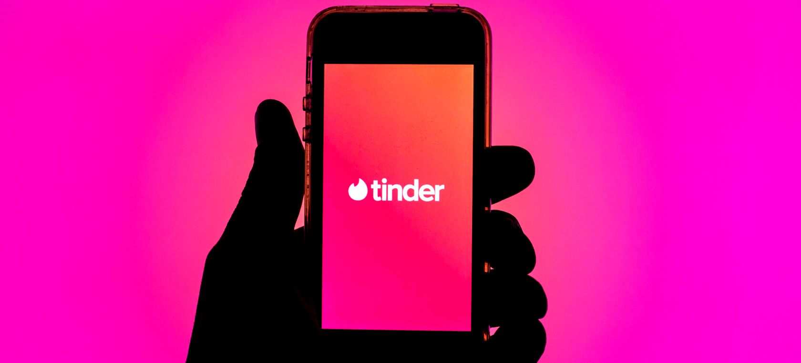

El proyecto consiste en realizar un cortometraje enfocado a la suplantaciòn de identidad en las aplicaciones de citas, este se presentarà en una pagina web de creacion propia con la que el usuario pueda interactuar.
Elegimos este tema debido a que gracias al uso masivo del internet las personas son muy vulnerables a pasar por una suplantaciòn de identidad lo cual es un claro foco de riesgo para los usuarios. Decidimos que se tratara de un cortometraje puesto que este nos proporciona mayor libertad creativa y estarà en una pagina web interactiva puesto que este medio es mas comodo para los usuarios, es un medio facil de acceder y nos facilita compartir el producto final.
El rpoyecto va dirigido principalmente a un publico conformado por adultos jovenes con edad de registrarse en aplicaciones de citas online (+18), sin embargo todo el publico podria sentirse identificado con los aspectos de suplantaciòn de identidad. Por ultimo, la razon por la que elegimos que fueran aplicaciones de citas es porque es uno de los recursos que màs utilizan los acosadores para controlar a sus victimas en internet.
